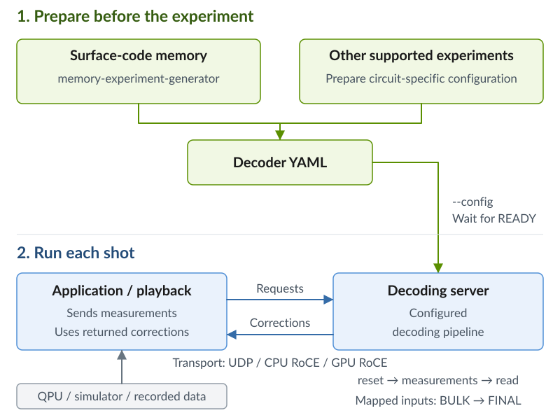

Decoding Server User Guide
The CUDA-Q QEC decoding server runs the decoding pipeline defined by a YAML configuration independently of the program controlling a quantum processor (QPU). A runtime sends measurements to the server and receives predicted logical corrections. The runtime can be CUDA-Q or a third-party control system that implements the server protocol.
This guide covers configuring and running the decoding server from a prebuilt Docker image, with no server build required. The playback emulator supports testing without a QPU. The CUDA-Q examples demonstrate building a client application that sends measurements to the packaged server.
Workflow at a glance


Configuration happens before the run. Measurements and corrections flow between the client and server during each shot. Available transports depend on the installed package and dispatch mode.
Prepare the configuration. For supported surface-code memory experiments, use Generate a memory-experiment configuration. Otherwise, prepare a model for the exact circuit. The YAML identifies the decoder, measurement mapping and observables.
Start the server. Load that YAML and wait for
QEC_DECODING_SERVER_READYbefore sending requests.Send measurements and read the correction. Reset the decoder, send measurements in the configured order, including any required final readout, then request corrections. An enqueue acknowledgement is not a completed decode. Apply the returned logical flip bits to the raw logical readout once, and check the result.
Prerequisites
Use a Linux x86-64 Docker host with Docker access. Run commands on the host unless a section says to run inside the container. These walkthroughs use UDP host networking and one decoder with ID 0. They check functionality; they do not establish a QPU feedback-latency guarantee.
The CPU examples need no GPU or host CUDA-Q SDK. GPU decoders require a compatible NVIDIA GPU, driver and NVIDIA Container Toolkit.
Get the prebuilt package
Use the CUDA-Q QEC decoding-server image for every walkthrough on this
page. The same image includes the server, memory-experiment-generator,
playback-emulator, and the compiler and headers for the CUDA-Q client examples.
The general CUDA-Q QEC library and development images are different packages.
Set DECODING_SERVER_IMAGE once for all examples. Run these commands
on the host:
export DECODING_SERVER_IMAGE='nvcr.io/nvidia/quantum/cudaq-decoding:cu13-latest'
docker pull "$DECODING_SERVER_IMAGE"
The image includes surface-code example sources under /root/examples.
Available decoders depend on the plugins shipped with the release; a generator
profile does not install its decoder.
Keep the server, generator, playback emulator and compiled clients on the same
image version. Additional plugins must be built against a compatible SDK; see
Use a custom decoder plugin.
Prepare the example directory
Create the shared run directory and its memory-experiment subdirectory on the host:
export QEC_RUN_DIR="$HOME/qec-decoding-server-runs"
mkdir -p "$QEC_RUN_DIR/memory-experiment"
cd "$QEC_RUN_DIR"
All configurations, schedules, compiled clients and models are stored under
QEC_RUN_DIR. The playback schedule is shown inline below. A source checkout
is not required.
Open the decoding-server container
Run this command on the host to create a reusable container. For GPU
decoders, including the color-code AI example, add --gpus all when creating
the container. GPU access cannot be added later to an existing container.
docker run -it --name qec-decoding --network host \
--mount "type=bind,src=$QEC_RUN_DIR,dst=$QEC_RUN_DIR" \
--workdir "$QEC_RUN_DIR" --env QEC_RUN_DIR \
--entrypoint bash "$DECODING_SERVER_IMAGE"
The shell is now inside the container, in the shared run directory.
The server, generator and playback emulator are already installed.
Server and client commands below run here unless labelled on the host.
Start each example in this shared run directory; cd "$QEC_RUN_DIR" returns
to it after working in a subdirectory.
To open a second shell, run this command in another host terminal:
docker exec -it qec-decoding bash
Both shells share the files in QEC_RUN_DIR. Stop each server with Ctrl+C
before starting another configuration on the same port. Exiting the second
shell and then the original shell stops the container without removing it.
For later sessions, reopen the stopped container with
docker start -ai qec-decoding instead of repeating docker run.
Generate a memory-experiment configuration
memory-experiment-generator prepares YAML for surface-code memory
experiments using a parallel-window task graph. This graph uses two
interleaved window families, A and B. It is not a general
configuration generator for every code, circuit or decoder. Its model profiles
are:
pymatching: PyMatching.nv-fusion-decoder: NV-Fusion.nv-qldpc-decoder: Relay BP.single_error_lutandmulti_error_lut: lookup-table decoders.
The selected decoder must be installed and support the generated A/B windows; model generation alone does not verify runtime compatibility. Color-code experiments and Ising/TRT models are not generated by this tool. Other circuits require their own model and decoder configuration.
The tool creates the server configuration, including the model and BULK/FINAL measurement mappings. It does not supply measurements or start the server.
Generate the YAML
In the container’s shared run directory, enter the memory-experiment
subdirectory created on the host. Generate a distance-3, Z-basis experiment
with 26 extraction rounds and PyMatching:
cd memory-experiment
memory-experiment-generator \
--distance=3 --rounds=26 --basis=Z --error-rate=0.001 \
--decoder=pymatching --output=memory.yaml
Wait for Generated server configuration: ... and exit status zero before
using the file. The output directory must exist; an existing file or symlink
is never overwritten. Choose another filename when changing an experiment.
The main choices are:
--distance: odd and at least 3;--basis: X or Z.--rounds=T: at least four extraction rounds, excluding the final data-qubit readout. For example, use--rounds=1000for 1,000 extraction rounds plus one readout. This is not the number of shots.--error-rate: the circuit’s CNOT depolarization probability, not a target logical-error rate. It must match the experiment’s noise model.--decoder: one of the installed decoder profiles listed above. Additional parameters use--decoder-arg=NAME=VALUE.--logical-qubits=N: N independent patches, assigned decoder IDs0throughN-1; this is not a coupled multi-patch experiment.
For the A/B parallel-window example and its configuration, see Decoding Task Graphs.
Run the playback example
This example uses the software playback emulator as the client, so no QPU is required. Real QPU and CUDA-Q clients send measurements and correction requests directly; they do not need a playback schedule. See Send the experiment’s measurements for that workflow. For schedule syntax, CLI and Python entry points, and source and session configuration, see Playback Emulator.
In this container terminal, start the CPU PyMatching server using the generated file. Leave it running in the foreground:
decoding_server \
--config=memory.yaml --transport=udp --port=50000 --timeout=3600
Wait for QEC_DECODING_SERVER_READY before sending measurements. If port
50000 is unavailable, choose another free port and use it in both commands.
The schedule below is read by the playback emulator, not the decoding
server. On the host, save it as
$QEC_RUN_DIR/memory-experiment/memory_schedule.txt. That directory is
shared with the container.
The schedule resets the decoder, sends 26 eight-bit stabilizer rounds and a
nine-bit final readout, then requests the correction. These synthetic, all-zero
measurements match the distance-3 configuration above. They test the
configuration-to-server handoff, not accuracy or performance:
# Synthetic distance-3 Z-memory smoke test: 26 extraction rounds plus readout.
# Not sampled circuit data or an accuracy/performance benchmark.
0 reset
1 stream source=0b00000000 rounds=26 every=1
- enqueue_data source=0b000000000
- get_corrections 0 return_size=1
Open a second container shell as described in Open the decoding-server container. It starts in the shared run directory. Run:
cd memory-experiment
playback-emulator \
--config=memory.yaml --schedule=memory_schedule.txt \
--backend=udp --udp-endpoint=0:127.0.0.1:50000 --tick=1ms \
--out=memory-result.csv
In get_corrections 0 return_size=1, 0 is the expected correction bit;
return_size=1 requests one bit. Pass --config to playback too: its
enqueue_data operation uses the YAML’s FINAL mapping. Check that the
correction row has status=0, read_completed=1 and
correction_bits=0, matching the expected zero correction.
Stop the server with Ctrl+C in its original terminal. The shell remains
available to generate another configuration and start the server with a
different --config path. Use new
filenames for each experiment’s YAML and results.
The YAML, schedule and CSV remain on the host under
$QEC_RUN_DIR/memory-experiment. These are functional checks, not an
end-to-end latency or throughput benchmark.
Send the experiment’s measurements
For each independent shot, reset the patch’s decoder, send chronological raw
measurements through BULK mapping ID 0, then send the terminal data-qubit
readout through FINAL mapping ID 1. FINAL closes the shot; a correction read
does not replace it. For this surface-code layout, each extraction round has
distance*distance-1 measurement bits and the readout has
distance*distance bits. Match the generated model’s measurement ordering,
preparation basis and stabilizer circuit, not just these widths; do not submit
already-formed detector bits in place of measurements.
In a CUDA-Q kernel, use enqueue_syndromes_mapped to select the mapping ID;
see C++ realtime decoding API.
For third-party clients, see the
Decoding Server Message Format.
Use interfaces matching the server package’s version for both mapped-input
and fixed-shot clients.
The generator explicitly selects output: corrections. get_corrections
therefore returns logical flip bits to XOR with the experiment’s raw logical
readout once, not physical-qubit corrections or an already-corrected measurement.
For FPGA or third-party producers, use Integrate a third-party runtime and
Realtime Decoding with CUDA-Q Decoding Server for transport setup. The YAML does not set up the
NIC, load FPGA firmware or adapt a producer’s measurement layout.
Color-code-enabled AI decoder
The server supports color-code AI predecoding through trt_decoder using
a matching exported ONNX model and circuit-specific YAML configuration.
The surface-code memory generator does not prepare color-code configurations.
For model preparation and the complete Ising plus Chromobius example, see Ising Color-Code Emulator with Decoding Server. Its model, software and GPU prerequisites apply to that example, not to the CPU walkthroughs on this page.
Once a validated configuration and model are available, start the server with
that YAML through the --config option as above. A QPU client,
CUDA-Q application or playback emulator can then send the matching measurements
and request corrections. Keep the model files in the shared run directory so
the server can access them.
CUDA-Q examples: surface-code programs
The packaged surface_code-1 program runs a distance-3 surface-code memory
circuit in Stim. Its -cqr variant streams measurements to the separate
server while the circuit executes. The following examples run 100 shots with
three rounds and CNOT error probability 0.001, using three decoders:
Decoder |
Configuration |
|---|---|
|
CPU minimum-weight perfect matching. |
|
CPU lookup table, using the example’s lookup depth 2. Keep this small geometry because table size grows with code size and lookup depth. |
|
CPU sliding window with PyMatching, window size 3, and step size 1. Here the window covers the three-round shot. |
The application supplies the measurements and reads the correction through CUDA-Q’s realtime decoding API. The complete program is already included in the image; only the client application is compiled below.
Build the packaged client once
Compile only the application using the compiler and matching headers inside the image. The server is already built. In a container shell at the shared run directory, save the executables alongside the experiment files:
BUILD_DIR="$PWD/client-build" bash /root/examples/build.sh surface_code-1
Use the image’s example sources and build script together. An arbitrary host SDK or a newer source checkout may use a different realtime protocol.
Generate configurations and select a decoder
Generate one server configuration for each decoder. Run this block in the container shell at the shared run directory:
(
set -e
for DECODER in pymatching multi_error_lut sliding_window; do
SW_ARGS=()
if [ "$DECODER" = sliding_window ]; then
SW_ARGS=(--sw_inner_decoder pymatching --sw_window_size 3 --sw_step_size 1)
fi
./client-build/surface_code-1-local \
--distance 3 --num_rounds 3 --num_shots 100 --p_cnot 0.001 \
--decoder_type "$DECODER" \
"${SW_ARGS[@]}" \
--save_dem "$PWD/surface-$DECODER.yaml"
done
)
Start one decoder’s server:
DECODER=pymatching
QEC_DECODING_SERVER_STATS=1 decoding_server \
--config="surface-$DECODER.yaml" --transport=udp --port=50000 --timeout=3600
Wait for QEC_DECODING_SERVER_READY. In the second container shell at the
shared run directory, select the same decoder and run its -cqr client:
DECODER=pymatching
SW_ARGS=()
if [ "$DECODER" = sliding_window ]; then
SW_ARGS=(--sw_inner_decoder pymatching --sw_window_size 3 --sw_step_size 1)
fi
QEC_DECODING_SERVER_PORT=50000 \
QEC_DECODING_SERVER_TRANSPORT=udp \
CUDAQ_DEVICE_CALL_CHANNEL=host_dispatch \
./client-build/surface_code-1-cqr \
--distance 3 --num_rounds 3 --num_shots 100 --p_cnot 0.001 \
--decoder_type "$DECODER" "${SW_ARGS[@]}" \
--load_dem "$PWD/surface-$DECODER.yaml"
Stop the server with Ctrl+C after the client completes. Repeat with
DECODER=multi_error_lut and DECODER=sliding_window in both shells.
Read the application results
The client prints Result size: 100, the measured logical outcomes and the
number of corrections applied. These are experiment results; a nonzero logical
error count does not by itself indicate a server or transport failure.
To confirm that the separate server handled the shots, check its shutdown
line QEC_DECODING_SERVER_DECODER_STATS id=0 for decodes=100 and
errors=0. The client should also print CQR service dispatch count: 0.
The client counter alone is not proof of server routing; check both logs.
These compiled-client examples cover fixed-duration shots. For generated memory experiments, use Generate a memory-experiment configuration rather than substituting a new YAML into these fixed-model clients. NVIDIA qLDPC and NV-Fusion require their corresponding plugins in the release image. Surface-code Ising requires its own model and measurement contract. See Realtime Decoding with CUDA-Q Decoding Server for the surface-code Ising application and the Fusion API for Fusion configuration.
Use a custom decoder plugin
The server can load an additional C++ decoder from a shared library (.so)
without rebuilding the server. Build the plugin on a development host or in a
separate build container, then deploy the library to the server container.
The workflow does not require a compiler in the decoding-server image.
Implement and build the plugin
Follow Implementing a New Decoder in C++ for the
cudaq::qec::decoder interface and decoder registration. Choose a registered
name that does not conflict with an installed decoder. Register a parameter
schema if the decoder accepts YAML custom arguments; see
Custom decoder parameters. No schema is
required when decoder_custom_args is absent or empty.
For a decoder used directly by the server, support
decode_result_type::observables and return logical flip bits. An algorithm
that predicts error frames can use project_errors_to_observables with the
model’s observable matrix before returning its result.
Use the C++ SDK matching the server’s CUDA-Q QEC release, CPU architecture and C++ ABI. CUDA plugins also need compatible CUDA libraries and a supported GPU. Rebuild plugins after an incompatible SDK change.
Copy the SDK headers and libraries from the existing qec-decoding container
to the server host:
docker cp qec-decoding:/opt/nvidia/cudaq-qec "$QEC_RUN_DIR/cudaq-qec-sdk"
export QEC_SDK_PREFIX="$QEC_RUN_DIR/cudaq-qec-sdk"
Use a new destination directory for the copy. If compilation runs on another
host or in a separate build container, transfer this SDK directory there and
set QEC_SDK_PREFIX to its location in that environment. The copied files
match the server package; a compatible compiler and any decoder-specific
development dependencies are still required.
In the development environment, build a decoder implemented in
my_decoder.cpp with:
c++ -std=c++20 -O3 -fPIC -shared my_decoder.cpp \
-I "$QEC_SDK_PREFIX/include" -L "$QEC_SDK_PREFIX/lib" \
-lcudaq-qec-decoders -Wl,-rpath,'$ORIGIN/..' \
-o libmy_decoder.so
Add any libraries required by the decoder’s implementation to the build and make their runtime dependencies available in the server container. The RPATH above locates the server’s decoder library one directory above the plugin.
Deploy and select the plugin
Transfer libmy_decoder.so to $QEC_RUN_DIR on the server host.
Stop the server process before installing the plugin. For the reusable
qec-decoding container created above, run on the host:
docker cp "$QEC_RUN_DIR/libmy_decoder.so" \
qec-decoding:/opt/nvidia/cudaq-qec/lib/decoder-plugins/libmy_decoder.so
Copy only the additional plugin, not a replacement directory that hides the bundled plugins. The file remains in this container across stop/start; a newly created container needs the plugin deployed again.
Save the experiment’s YAML as custom.yaml in $QEC_RUN_DIR and set the
decoder entry’s type to its registered decoder name, such as
my_decoder, not the library filename. Supply the
model, measurement mapping and decoder_custom_args required by that decoder;
changing type alone does not make an unrelated model compatible.
Start a new server process inside the container:
CUDAQ_LOG_LEVEL=info decoding_server \
--config=custom.yaml --transport=udp --port=50000 --timeout=3600
Check the startup log for Successfully loaded plugin with the deployed
filename, then wait for QEC_DECODING_SERVER_READY. Run a small client or
playback case with a known expected correction before using the plugin for an
experiment. A loaded library alone does not establish decoding correctness.
Integrate a third-party runtime
A real QPU deployment uses the same server but needs a runtime adapter for its control system. The hardware vendor supplies the QPU connection; the adapter supplies decoder messages and a compatible transport.
A third-party runtime connects to the same server using the advertised endpoint
and decoder ID. For these UDP examples, use host address 127.0.0.1:50000
and decoder ID 0. A client on another machine needs the server host’s
reachable address instead of 127.0.0.1.
The client workflow is:
Load a server configuration matching the circuit, model, measurement order and observables.
Wait for server readiness, then call
reset_decoderbefore each independent experiment.Send the configured measurements through
enqueue_syndromesor the mapped enqueue API. Use the mapping IDs declared in the YAML; a mapping markedtype: finalcloses the shot.Call
get_correctionsand use the returned logical flip bits to correct the raw logical readout once. An enqueue acknowledgement is not the correction;NOT_READYmeans the correction is not available yet.
For CUDA-Q clients, see Realtime Decoding. Third-party clients must implement the protocol matching the server package; see Decoding Server Message Format. For CPU RoCE, GPU RoCE or FPGA deployment, follow the transport setup in Realtime Decoding with CUDA-Q Decoding Server. Those hardware settings are separate from the generator’s YAML model configuration.
Troubleshooting
Failure |
Action |
|---|---|
Registry returns |
Confirm the image reference and package read access. Authenticate to
the registry as instructed by the package owner. Do not continue until
|
Server exits before readiness |
Read the server terminal output. Fix the reported YAML, missing plugin, model path or GPU error before rerunning. |
Server is not ready |
Read the server terminal output. Wait for TensorRT engine construction to finish, or fix any initialization error before sending measurements. |
Output file already exists |
Choose a new YAML or result filename to preserve previous runs. |
Playback has incomplete or failed reads |
Check that the schedule, decoder ID, DEM, and measurement mapping belong to the same experiment. Inspect the returned status in the CSV. |
Client compilation fails |
Run the packaged |
Model or engine initialization fails |
Check GPU visibility, TensorRT/plugin availability, and paths under
|
|
Use the decoding-server package for this release, not a library or development image, an SDK archive or a decoders-only installation. |
Generated configuration is rejected by the server |
Use the same image for generation and serving. Check the selected plugin, its required arguments and its support for the generated model. |
No final correction or incorrect logical result |
Check the decoder ID, raw measurement order and FINAL mapping. Send the data readout, then apply the returned correction exactly once. |
See also
Realtime Decoding: decoding concepts and configuration.
Decoding Task Graphs: graph construction and execution.
Playback Emulator: schedule syntax, CLI and Python interfaces, sources and sessions.
Realtime Decoding with CUDA-Q Decoding Server: surface-code and real FPGA client examples.
Ising Color-Code Emulator with Decoding Server: color-code accuracy and performance studies.
QEC Decoders: decoder capabilities and API references.